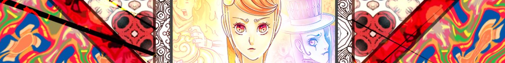

If you find a mistake, or have any improvements or suggestions, send me a pull request on Github or a message on Discord. Fixes will be integrated into an end-of-season batch.
If you find a mistake, or have any improvements or suggestions, send me a pull request on Github or a message on Discord. Fixes will be integrated into an end-of-season batch.
These subtitles are provided free of charge. They are produced non-commercially, and earn the author zero bucks ($0).
These subtitles are not for distribution on for-profit streaming websites. The operators of these websites are pulling a profit off the hard work of fansubbers and the anime creators.
Don't be scammed! Download from community-run bittorrent trackers instead, and support any anime you enjoy if you can.
As of the release of episode #3, I am searching for people who can do any of the following:
Send me a message on Discord if you can help out in any way.
This section will be kept up to date.

Synopsis:
In the story, Ai is an ordinary girl, and a dancer. Her friend Machi is also a dancer, but Machi is a genius. Watching Machi's talent often makes Ai feel down. But one day, Ai finds out Machi's secret: the existence of the Aguu, palm-size entities who grant genius talent upon those who hold them. In order to save Machi, who has become a "Seamstress" who makes Aguu, Ai becomes a "Savior." The Saviors are a group of people who have fought the Seamstresses for generations.
― Anime News Network
Official website:
Promotional videos:
Staff:
Credits:
Downloads:
Warning: Video players other than MPV or VLC will not display the subtitles correctly.